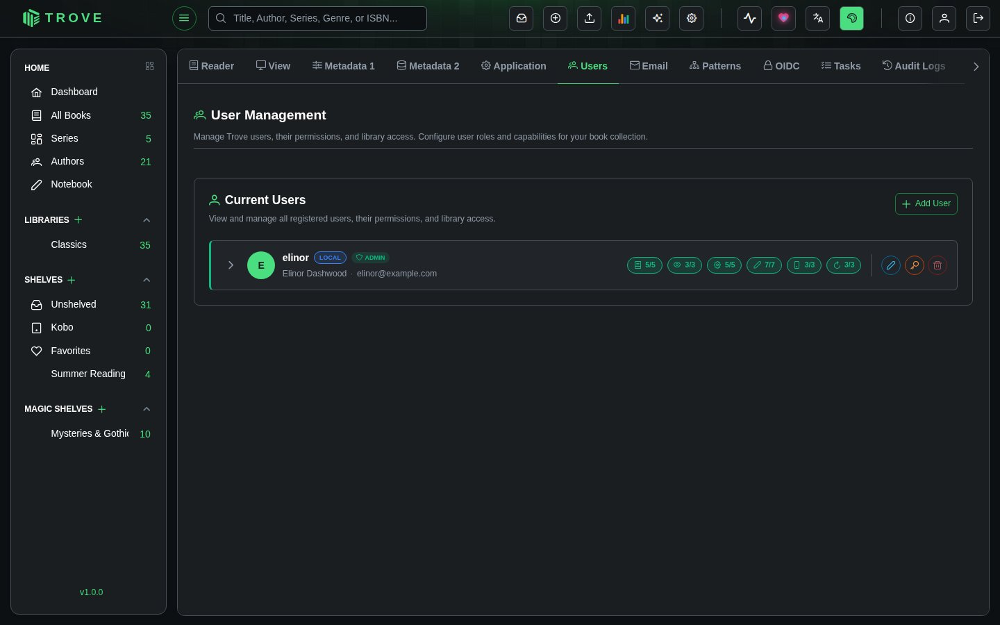

Users and permissions
User Management lets administrators create, edit, and delete users, assign granular permissions, control library access, and set up content restrictions to limit what specific users can see.
Navigate to Settings > Users to access this page. Only admin users can manage other users.
Current Users
The Users page lists all registered users. Each user row shows:
- Avatar with initials and a colored badge
- Username with a LOCAL or OIDC badge indicating the authentication method
- Full name and email
- Permission summary badges showing how many permissions are enabled per category (e.g., 3/5)
Click the arrow on a user row to expand it and view or edit their full details.

Adding a User
Click "+ Add User" in the top right corner. The creation form requires:
| Field | Required | Notes |
|---|---|---|
| Full Name | Yes | Minimum 3 characters |
| Username | Yes | Must be unique |
| Yes | Must be a valid email address | |
| Password | Yes | At least 8 characters |
| Confirm Password | Yes | Must match password |
| Library Access | Yes | Select which libraries the user can access |
After filling in the details, you can assign permissions and content restrictions before saving.
User Information
Expand a user row and click the edit button to modify their details.
| Field | Description |
|---|---|
| Full Name | The user's display name |
| The user's email address | |
| Libraries | Which libraries the user can access. Admin users automatically have access to all libraries. |
Passwords
The key button on a user's row (Change password) sets a new password for them, which is how you help someone who's forgotten theirs; Trove doesn't send reset emails. Users can change their own password from their profile, under the person button in the top bar. Users who sign in with single sign-on have no Trove password.
Permissions
Permissions are organized into categories. Each permission is a checkbox that can be toggled individually. Enabling Full Administrator Access grants all permissions automatically.
Administration
| Permission | Description |
|---|---|
| Full Administrator Access | Grants all permissions and full system control |
Book Management
| Permission | Description |
|---|---|
| Upload Books | Upload book files (into a library or Bookdrop) |
| Download Books | Download book files |
| Delete Books | Remove books from libraries |
| Manage Library | Create, edit, and delete libraries |
| Email Books | Send books to devices or email addresses |
System Access
| Permission | Description |
|---|---|
| Access Bookdrop | Use the Bookdrop upload interface |
| View Library Statistics | View library-level statistics and analytics |
| View User Reading Statistics | View personal reading statistics |
System Configuration
| Permission | Description |
|---|---|
| Manage Metadata Configuration | Configure metadata fetch providers and settings |
| Manage Application Preferences | Change application-wide preferences |
| Access Task Manager | View and manage background tasks |
| Manage Icons | Upload and manage custom library icons |
| Manage Fonts | Upload and manage custom reader fonts |
Metadata Editing
| Permission | Description |
|---|---|
| Edit Single Metadata | Edit metadata for individual books |
| Bulk Auto Fetch Metadata | Run automatic metadata fetch on multiple books |
| Bulk Custom Fetch Metadata | Run custom metadata fetch on multiple books |
| Access Bulk Metadata Editor | Use the bulk metadata editor |
| Bulk Regenerate Cover | Regenerate covers for multiple books |
| Move/Organize Files | Move and reorganize book files on disk |
| Bulk Lock/Unlock Metadata | Lock or unlock metadata fields in bulk |
Device Sync
| Permission | Description |
|---|---|
| KOReader Sync | Sync reading progress with KOReader devices |
| Kobo Sync | Sync books and progress with Kobo devices |
| OPDS Feed Access | Set up OPDS accounts and use the OPDS and Komga feeds |
Bulk Reset
| Permission | Description |
|---|---|
| Bulk Reset Trove Read Progress | Reset reading progress tracked by Trove |
| Bulk Reset KOReader Read Progress | Reset KOReader sync progress |
| Bulk Reset Book Read Status | Reset read/unread status for books |
Permission Summary Badges
When a user row is collapsed, colored badges provide a quick overview of their permission levels per category. Each badge shows the count of enabled permissions vs. the total (e.g., 3/5). The badge color reflects the level: none, low, medium, or high.
Content Restrictions
Content restrictions let you control which books a user can see based on metadata attributes. This is especially useful for shared instances where you want to hide mature or age-inappropriate content from certain users.
Restriction Types
| Type | Description | Example Values |
|---|---|---|
| Category/Genre | Filter by the book's categories or genres | Horror, Romance, True Crime |
| Tag | Filter by book tags | Violence, Profanity |
| Mood | Filter by book moods | Dark, Lighthearted |
| Age Rating | Filter by age rating thresholds | All Ages, 6+, 10+, 13+, 16+, 18+, 21+ |
| Content Rating | Filter by content maturity level | Everyone, Teen, Mature, Adult, Explicit |
Restriction Modes
Each restriction can operate in one of two modes:
| Mode | Behavior |
|---|---|
| Exclude (Hide matching) | Books that match the restriction value are hidden from the user |
| Allow Only (Show only matching) | Only books that match the restriction value are shown; everything else is hidden |
Adding a Restriction
- Expand the user row and enter edit mode
- Scroll down to the Content Restrictions section
- Select a Type (e.g., Age Rating)
- Select a Mode (e.g., Exclude)
- Select a Value (e.g., 18+)
- Click the + button to add the restriction
- Save the user to apply changes
You can add multiple restrictions. They are evaluated together when filtering books.
How Restrictions Are Combined
When a user has multiple restrictions, they work together as follows:
- Multiple Exclude rules: A book is hidden if it matches any exclude rule. For example, excluding both "Horror" and "True Crime" categories hides books in either category.
- Multiple Allow Only rules: A book must satisfy all allow-only rules to be visible. For example, allowing only "Fiction" category and "Lighthearted" mood means only fiction books tagged as lighthearted are shown.
- Mixed Exclude + Allow Only: Allow-only rules are applied first to narrow down the visible set, then exclude rules remove any remaining matches. For example, allowing only "Young Adult" and excluding "Violence" tag shows young adult books that aren't tagged as violent.
Age Rating Filtering
Age rating restrictions work as thresholds. If you exclude a specific age rating (e.g., 13+), all books rated at or above that age level are hidden. Books without an age rating or with a lower rating remain visible.
Examples
Scenario: Child-safe account
- Add restriction: Type = Age Rating, Mode = Exclude, Value = 13+
- Result: The user only sees books rated below 13+
Scenario: Fiction-only reader
- Add restriction: Type = Category/Genre, Mode = Allow Only, Value = Fiction
- Result: The user only sees books categorized as Fiction
Scenario: Hide specific content
- Add restriction: Type = Tag, Mode = Exclude, Value = Violence
- Add restriction: Type = Tag, Mode = Exclude, Value = Profanity
- Result: Books tagged with Violence or Profanity are hidden
Deleting a User
Click the delete button on a user row to remove the account. This permanently deletes:
- The user account and profile
- All personal shelves and reading progress
- All content restrictions and settings
Notes
- Admin users always have access to all libraries and all permissions. Library and permission controls are disabled for admin accounts.
- Users created via OIDC (SSO) show an OIDC badge instead of LOCAL. Their password is managed by the identity provider.
- All user management actions (creation, updates, permission changes, deletion) are recorded in the Audit Log.
- Content restrictions are evaluated server-side. There is no way for a restricted user to bypass them through the UI.
- The values available in content restriction dropdowns (categories, tags, moods) are pulled from the metadata of books already in your libraries.